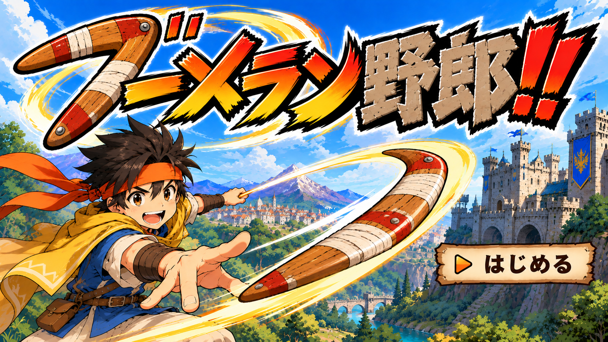

COMBAT PROTOTYPE / 01
v0.2ブーメラン野郎！
PLAYER100 / 100
シールダ100 / 100
移動
スマートフォンを横向きにしてください

読み込み中…ステージを選ぶ
3面以降は準備中
↑ プレイヤーの正面は常に上
◆ ブーメラン所持少し左に位置を取ると、右へ回り込みやすい。
正面は盾で防御。横・後ろに10回当てると勝利。落ちた武器は触れるだけで回収できます。
ボスが武器に重なっている間は回収できません。外した武器は自動で戻ります。
AD SPACE